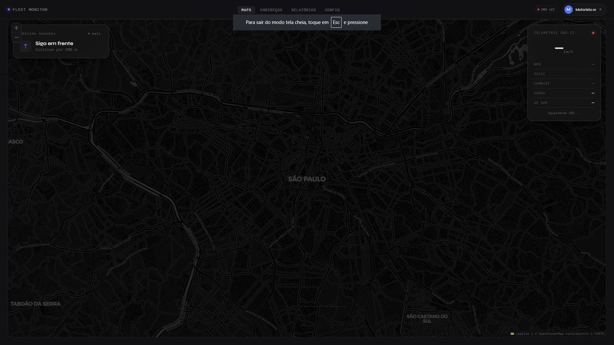

Embarcado + nuvem · cliente real · equipe de seis · 2026
I.A.R.A. — telemetria e gestão para uma frota real
Um dono de frota de veículos leves em São Paulo sabia onde os carros estavam, mas não conseguia provar nada depois: sem histórico de trajeto, notas de combustível chegando por foto no WhatsApp e nenhuma resposta quando o cliente perguntava sobre emissão de CO₂.
Meu papel: arquitetura e estruturação da base de código, camada embarcada no veículo e leitura OBD-II, junto à definição do escopo técnico com a equipe.

O sistema que construímos
- No carro: computador ligado à central eletrônica por OBD-II, lendo RPM, velocidade, temperatura e carga do motor, com tela no painel e registro do trajeto.
- No abastecimento: o motorista aponta o celular para o QR Code da nota fiscal, o app confere se ela é legítima e arquiva com a foto — o WhatsApp sai do fluxo.
- Para o gestor: painel web com mapa ao vivo e relatório em PDF de trajeto, custo, eficiência e emissão.
- Roteirização: melhor ordem de visitas resolvendo o problema do caixeiro-viajante.
- Assistente de voz embarcada, para o motorista conversar sem tirar a mão do volante.
A decisão que doeu
A primeira interface rodava em navegador e estava boa — até entrar o requisito de conversa por voz. A latência do áudio não permitia diálogo natural. Jogamos fora e reescrevemos em C++ com Qt 6 e QML, com serialização binária zero-copy em FlatBuffers entre o coletor OBD-II e a interface. Stack não é religião: quando o requisito muda, a decisão volta para a mesa.
Como validamos
Ensaios em dois veículos, com quatro amostras a cerca de 3.000 RPM, comparando a leitura com o taquímetro do painel. Documentei também a incompatibilidade de protocolo de um carro anterior à normatização brasileira — o caso que não funcionou entrou no relatório. Na roteirização, um teste com 15 endereços reais de São Paulo fechou 96,6 km em cerca de 161 minutos.
Resultado
- Latência de áudio250–400 ms30 ms
- Memória residente700 MB – 1 GB150–200 MB
- Frame de telemetria~320 bytes~96 bytes
Dois meses no ar: 91.825 registros de viagem e 44.207 pontos de telemetria guardados. Outra lição: queríamos capturar 100% da nota fiscal automaticamente, mas isso deixava o motorista esperando no posto — entregamos uma solução híbrida com cinco segundos de digitação. Resolver a dor real ganhou de perseguir a automação total.